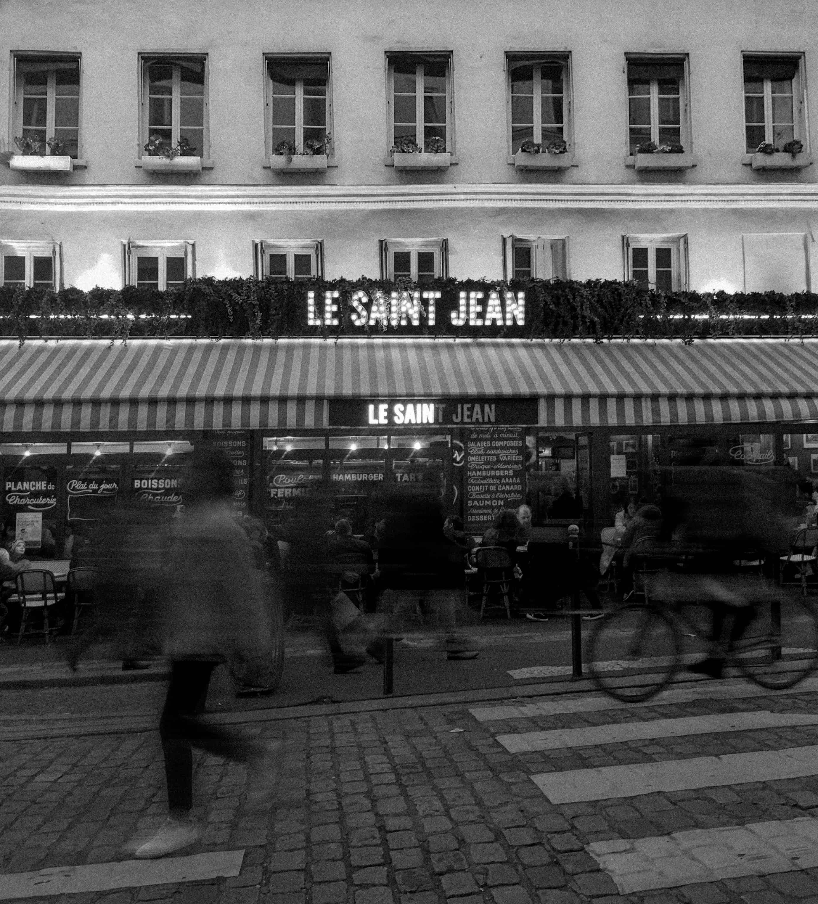
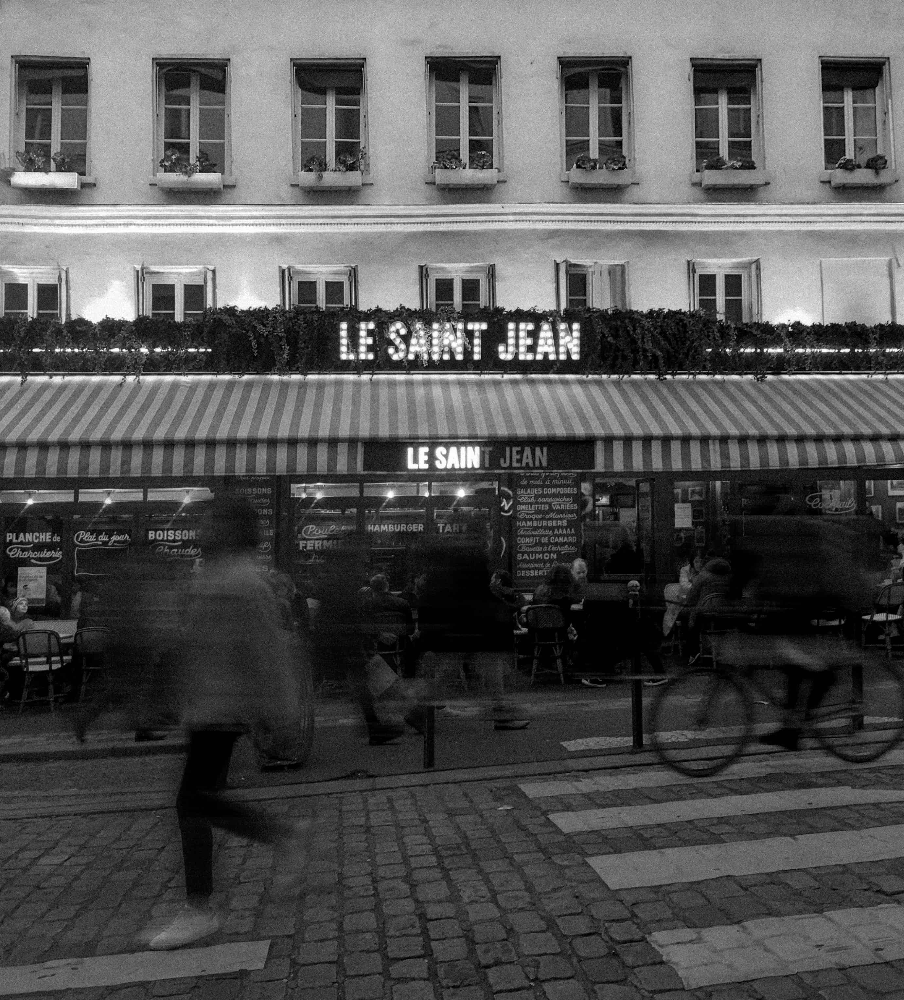
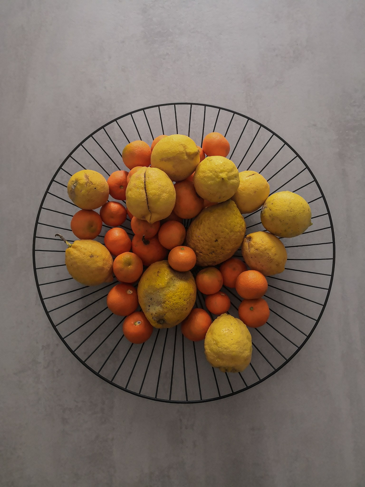
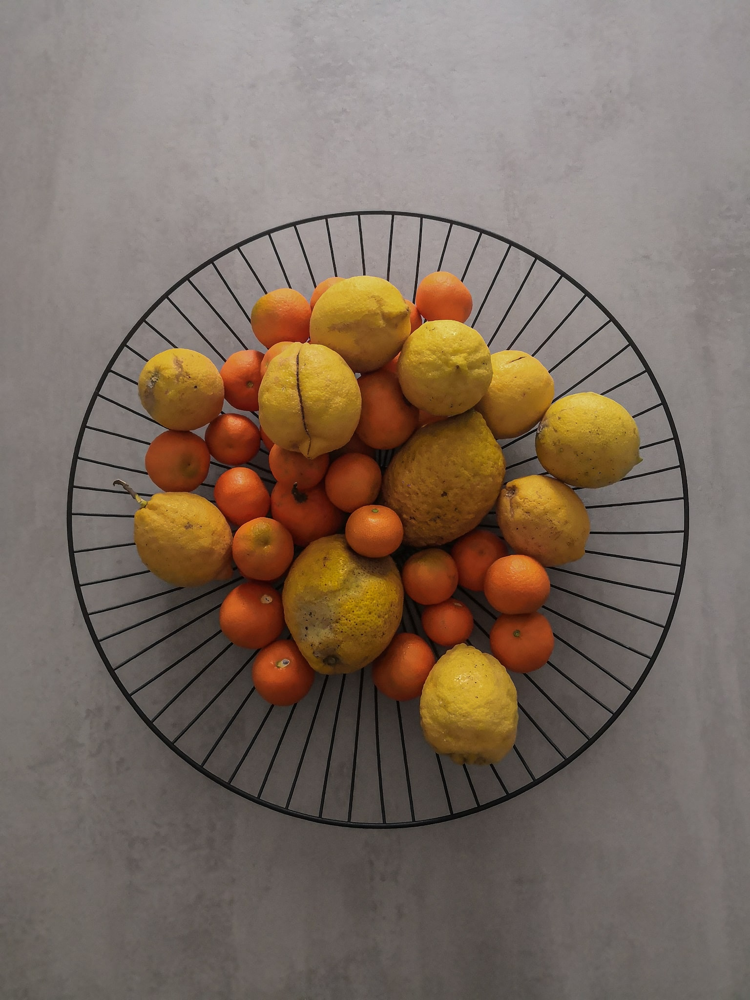

Monumental Cemetery, Milano.

Genova conditioning, shot by the train.
swipe →
Cloudy Day in Favignana.

Cloudy Day in Favignana.
Photos
I don't consider myself as a professional photographer.
This page has the simple purpose of showing another side of my personality through some of my photographs.
I think that the photos taken by a person can convey additional implicit information about him.
For this reason I find it correct to dedicate a section within a portfolio to this.
Now that being said, I do not hide my growing passion and my interest in photography, a unique means of expression, which I intend to cultivate and deepen soon.
Monumental Cemetery, Milano.
Genova conditioning, shot by the train.
swipe →
Cloudy Day in Favignana.
Cloudy Day in Favignana.

Place de la Concorde, Paris.
 

Le Saint Jean, Montmartre, Paris.

Dome of San Lorenzo, Guarino Guarini, Torino.

Ruined Cathedral of Naro, Sicily.
 

Sicilian agrumi, Naro, Sicily.

Identikit, from an idea by luigi ghirri, Milano.

Chronicles from a night at SuperLove, Milano.
swipe →
Chronicles from a night at SuperLove, Milano.